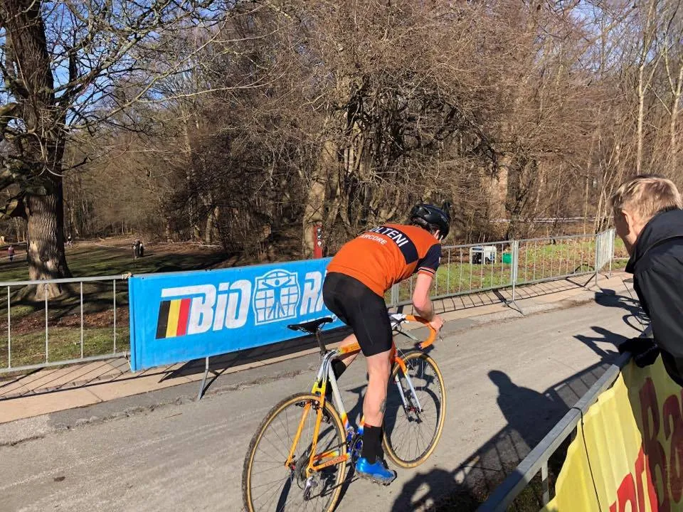

Molteni på podiet i sæsonens sidste Cross-løb

Squadra Moltenis Mark Petersen kom ind på en flot 2. plads ved Soigneur CX Cup finalen, der blev kørt ved Cafe Jorden Rundt i Charlottenlund.
Mark lagde sig sammen med Andreas Rasmussen i front fra start og tidligt stod det klart at vinderen skulle findes blandt de to. Mark og Andreas battlede hele vejen, men på sidste omgang slog Andreas et lille hul på et af løbestykkerne og kom i mål 10 sek før Mark.


Placering nummer 3 og nedefter var alle en omgang efter Mark og Andreas, og blandt dem var fx Brian Holm der blev nummer 12, Jens Langergaard der blev nummer ca 20 – hans chip virkede ikke.
Feltets mest liren rytter, var helt sikkert Lars Bryde, der var iført sin flotte Mapei speed-suit.
Sir Thomas Marker var meget synlig i løbet, idet han igen i år var sponsor for 2,5 km markeringsstrimmel på ruten, hvor der stod “Her køres der CX – advokat Thomas Marker”.